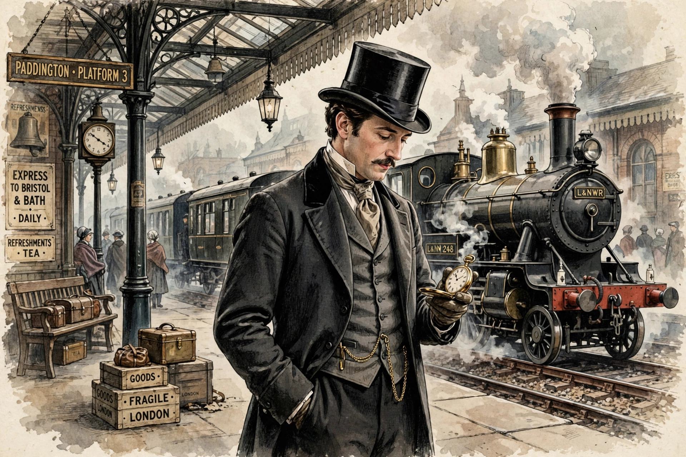

From Wikipedia, the free encyclopedia
| Phileas Fogg | |
|---|---|
| Created by | Jules Verne |
| First appearance | Around the World in Eighty Days (1872) |
| Occupation | Gentleman of independent means |
| Residence | 7 Savile Row, London |
| Companion | Jean Passepartout (valet) |
| Spouse | Aouda |
Phileas Fogg is the fictional protagonist of Jules Verne's 1872 novel Around the World in Eighty Days. A wealthy, unflappable English gentleman living in London, Fogg is a man of clockwork precision and few words, a member of the Reform Club whose entire life runs to an exact timetable.
Verne introduces Fogg as an enigma: rich, solitary, mathematically regular in his habits, "the least communicative of men". His serenity is absolute — delays, storms, and sabotage never ruffle him — yet beneath the impassive exterior he proves capable of generosity and courage, risking his wager and his fortune to rescue the Indian widow Aouda from a suttee and to save his valet Passepartout.
At the Reform Club, Fogg bets £20,000 — half his fortune — that he can circumnavigate the globe in eighty days, departing London on 2 October 1872 and returning by 21 December. Pursued by Detective Fix, who mistakes him for a bank robber, Fogg crosses Europe, Egypt, India, Hong Kong, Japan, and the United States. He appears to arrive minutes too late — until it emerges that by travelling eastward he has gained a day at the International Date Line, and he wins the wager with seconds to spare. He also marries Aouda, who had proposed to him.
Fogg has been played on screen by David Niven (1956 film), Pierce Brosnan, Steve Coogan (2004), Michael Palin in homage as a real-life traveller, and David Tennant in the 2021 television series, which softened and humanised the character.
Jules Verne · Around the World in Eighty Days · Pictograph
